LE HARAS DE BLINGEL- UN SIÈCLE DANS LA FAMILLE WATTINNE
LE HARAS DE BLINGEL- UN SIÈCLE DANS LA FAMILLE WATTINNE
Par Marianne Wattinne de Marles
Album destiné à nos enfants, Décembre 2014
INTRODUCTION
C'est de retour de Blingel en ce 11 novembre 2014 que Camille et Mathilde m'ont incitée à écrire mes souvenirs de Blingel et les anecdotes qui ont jalonné mon enfance et aussi celle de mes enfants, neveux, cousins, oncles et tantes...
Bien sûr il ne s'agit pas d'un exercice chronologique complet mais simplement raconter ce dont je me souviens et si je le peux, refaire un historique du haras de Blingel et comment la famille WATTINNE est arrivée là : alors c'est parti ! Il faudra me pardonner si je suis imprécise sur certaines dates et événements. En se remémorant les souvenirs autour du Haras, c'est aussi la mémoire de « nos chers disparus » que l'on fait revivre et ça fait du bien.
Origine de l'implantation du haras à Blingel
L'implantation de la famille WATTINNE dans ce coin perdu de la vallée de la TERNOISE, charmante rivière très poissonneuse à l'époque, surtout en truites, débute en 1859 lorsque après un grave incendie en 1836 puis une crise du coton, la filature de coton d'AUCHY LES HESDIN affaiblie est rachetée par la société L.WATTINNE ET CIE (qui deviendra WATTINNE-BOSSUT) à la famille GRIVEL, elle-même successeur de Jean-Baptiste SAY. Dans les biens de cette entreprise figurait une retorderie à BLINGEL et à GRIGNY, utilisant les chutes d'eau locales sur La Ternoise, et probablement des terres attenantes, ainsi que des bois. La retorderie de Blingel fermera en 1954.
Louis WATTINNE né en 1810 et décédé en 1867 exploita cette filature, puis son épouse Pauline BOSSUT (1818-1902), puis ce fut un de leur fils Gustave WATTINNE DUFOUR (1838-1896) qui prit la relève mais le personnage qui nous intéresse le plus dans l'histoire du haras, c'est bien mon arrière-grand-père Gustave Louis René WATTINNE DESURMONT, né en 1863, mort en 1929.
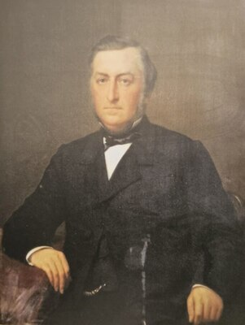
Gustave Wattinne
Gustave était associé dans la firme WATTINNE BOSSUT et FILS, important négoce de laine basé rue du château à ROUBAIX. Il passait ses vacances dans le parc de la filature d'AUCHY LES HESDIN, ravissant parc de 6 hectares, dans une grosse maison baptisée « la smalah » probablement en raison de sa nombreuse famille additionnée des membres du personnel. Une autre branche de la famille, les GEORGES WATTINNE habitaient le « CHATEAU BLANC » ; celui-ci existe toujours alors que la Smalah fut détruite à la fin des années 1990. (Plus tard, dans les années 1960 une piscine, un court de tennis et 2 trous de golf furent aménagés pour le plus grand plaisir de cette nombreuse famille ; les cousins de Blingel arrivaient en vélo en passant par la propriété du haras le long de la rivière, puis passage à Rollancourt et le long du marais jusqu'à Auchy.)
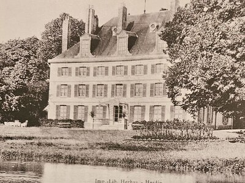
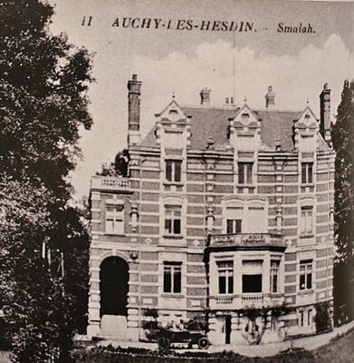
De la construction du haras je ne sais pas grand-chose : ni l'année exacte ni le nom de l'architecte: On peut dire que l'ancêtre avait vu les choses en grand ! Pas moins de 60 boxes, avec des boxes d'isolement au bout d'une piste d'entrainement, de nombreux hectares de pâtures.
Chaque pâture ayant un numéro matérialisé par une girouette en fer forgé, chacune différente, silhouettes à la fois très artistiques et pleines d'humour dessinées par Jean JOIRE, cousin et ami de Gustave, en effet il avait épousé une certaine Germaine WATTINNE, (Jean JOIRE 1862-1950 a compté parmi les très bons sculpteurs animaliers de la fin du 19ème début 20ème ; s'il avait été un artiste sans le sou, peut-être aurait-il été aussi connu que POMPON, BUGATTI, MAINE ou BARYE mais, fils de banquier, il n'avait pas à se soucier de vendre ses œuvres. Par chance et grâce à Christophe OBRY nous avons pu en conserver quelques exemplaires dans notre famille ; Christophe, très amateur de sculptures a beaucoup d'admiration pour l'œuvre de son arrière grand-oncle, eh oui j'en profite pour glisser que Christophe a du sang WATTINNE mais je ne refais pas la généalogie, juste dire qu'il descend par la branche EUGENE WATTINNE de LOUIS WATTINNE et PAULINE BOSSUT, comme les ¾ des familles industrielles de ROUBAIX. Michel disait que nos enfants seraient issus d'un « in-breeding » (traduire consanguinité) Dieu merci ils naquirent bien normaux !
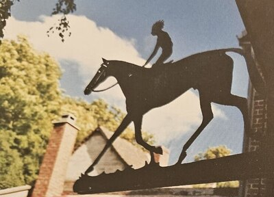
Pour continuer la description du haras à son origine : de nombreux logements, une étalonnerie, une baignoire de « thalasso » pour les chevaux (approvisionnée en eau par la rivière La Ternoise au lieu dit « la chute »), une petite usine de production d'électricité, laquelle fournissait l'ensemble en électricité (époque révolue où EDF n'avait pas le monopole de la production), sans oublier une aviculture ainsi qu'un moulin à Rollancourt dans les années 20 : à l'instar de Madame de POMPADOUR au hameau du petit TRIANON, notre Gustave, gentleman farmer accompli, avait créé à Blingel un ensemble « agricole » complet : jardins de fleurs, roseraie, potagers, moulin à Rollancourt, basse-cour, chevaux... Le bonheur est dans le pré...
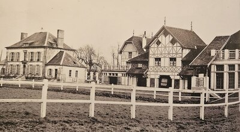
Le tout dans un style néo-normand, eh oui si l'élevage n'est pas situé en Normandie, la Normandie s'installera dans le Pas de Calais !
Gustave n'habitait pas la grande maison du haras qui servait de bureau et de je ne sais quoi d'autre.
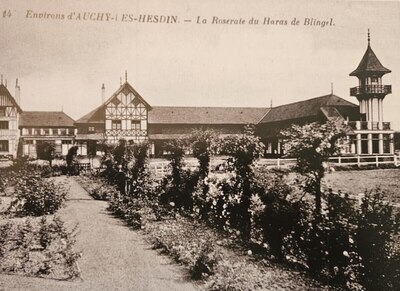
Le moulin de Rollancourt
À l'emplacement de l'actuel moulin de Rollancourt se sont succédés deux édifices aujourd'hui disparus. Un moulin, ressemblant à celui de Maintenay, a été édifié il y a longtemps sur la Ternoise. Il a été remplacé par un plus grand bâtiment, beaucoup plus moderne, dans les années 1920. Ce dernier a malheureusement été détruit par un incendie, et peine quatre ans après sa construction.
S'en est suivi l'édification de l'actuel moulin, en 1928, par monsieur Gustave Wattinne, copropriétaire de la filature de coton d'Auchy-lès-Hesdin. Construit principalement en béton, il présente en haut de sa façade une céramique qui reprend le nom de la société qui gère l'activité du moulin « Étoile du Nord », ainsi que son logo, une étoile bleue à 5 branches. Le bâtiment, d'un seul bloc, présente toutefois trois parties de hauteurs différentes. Cette particularité s'explique par la répartition des machines à l'intérieur du moulin. La partie la plus haute rassemble ainsi la plupart des machines qui servent à trier, nettoyer et moudre le grain. Exploitant la gravité pour faire tomber le grain d'une machine à l'autre, cette partie doit être très haute. La partie la plus basse sert notamment au conditionnement et au stockage de la farine.
Le moulin de Rollancourt a la particularité de toujours fonctionner avec la machinerie datant de 1928, ce qui est tout à fait exceptionnel dans la région. Le grain passe au travers d'une véritable forêt de conduits en pitchpin, un bois d'Amérique du Nord, tantôt montant à l'aide d'élévateurs à godets, tantôt redescendant par gravité. Le grain, moulu avec le procédé des années 1920, donne une farine plus pure que celle des grandes minoteries actuelles. Le moulin a un droit de mouture annuel de 1700 tonnes. Étant donné que le débit de la Ternoise n'est plus assez fort pour actionner à lui tout seul le moulin, deux turbines sont là pour aider à le faire fonctionner.
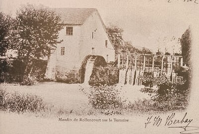
La création du haras
La création du haras remonte à 1912, Gustave, grand sportsman, l'un des créateurs du champ de courses du TOUQUET, se passionna pour les chevaux. Le premier gagnant élevé par ses soins fut MARMOUSET en 1914 ; plus tard, en 1929 il rampa aux balances LE TOUQUET qui venait d'emporter le grand steeple-chase de la chaine entrainé par John CUNNINGTON.
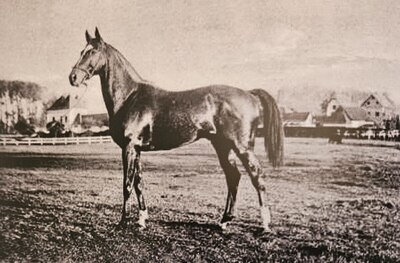
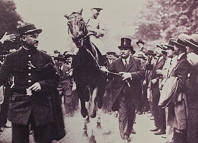
M. Gustave Wattinne
On apprit, le 5 décembre à Auteuil, la mort de M. Gustave Wattinne, personnalité du turf très appréciée, dont on aimait à voir triompher les couleurs. Ce grand industriel du Nord était venu jeune à un sport auquel il est resté fidèle. Sa casaque cerise, toque bleu était populaire : elle était de celles qui sont unanimement respectées. Tout d'abord ses chevaux avaient couru sous le nom de M. Albert Jacquemin et avaient connu aussitôt des succès à Auteuil, Vertige, Corton II, Palestine, Marmouset, Saint Paul, Opott, deuxième du Grand Prix de Paris, Embry, troisième du Jockey-Club, qui avait succombé de peu contre Comrad dans le Grand Prix : La Fête, à Auteuil, en dernier lieu Le Touquet dans le Grand Steeple-Chase de Paris (1929) avaient brillamment défendu ses intérêts.
Il avait fondé le haras de Blingel où sont nés trois de ces vainqueurs : Marmouset, Embry et Le Touquet. Récemment il avait adjoint à ses étalons Felton auquel il croyait beaucoup d'avenir dans sa nouvelle carrière.
Ses entraîneurs ont été Charles Carter, W. Flatman, Percy Carter, H. Davison et John Cunnington.
Ce charmant homme qui fut un fervent du cheval sera très regretté. Il était de ceux que l'on voudrait voir très nombreux dans l'enclosure et dont on se souvient avec émotion.
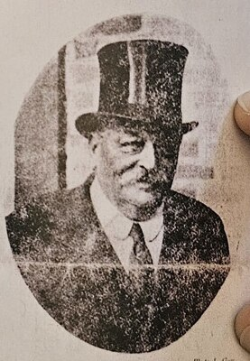
L'époque des étalons
A l'époque il y avait des étalons au haras, ce qui fut abandonné par la suite ; nous disposons du livret de présentation de FELTON, avec de très belles photos noir et blanc bien sûr de l'étalon et du haras prises par le Commandant Jean-Baptiste TOURNASSOUD 1870-1951, photographe animalier fort réputé, ami des frères LUMIERE. L'entier OPOTT entre au haras en 1918.
Dans le village de Blingel on remarque face à l'entrée du haras une grosse bâtisse dans le même style que l'ensemble : c'était la maison conçue à l'origine pour le vétérinaire, qui deviendra la maison des cousins MASUREL WATTINNE, la famille de Charlotte CHEVALLIER. Cette maison est à l'heure actuelle occupée par mon cousin Christian WATTINNE.
Gustave fit aussi l'acquisition d'une maison de village non loin de l'église : il s'agit bien de notre HOTELLERIE. A l'époque il passait du monde à Blingel (fournisseurs, clients de l'aviculture etc..) et l'hôtellerie était une auberge avec quelques chambres pour accueillir les gens de passage, ainsi au dessus de la porte d'entrée on pouvait lire l'enseigne « PETITE HOSTELLERIE ET RESTAURANT DU HARAS ». (Je ne sais quand l'auberge a fermé mais par la suite la maison fut occupée par les enfants de mon grand-père René WATTINNE, d'abord les ainés GLORIEUX, VANOUTRYVE, puis par les plus jeunes RENE et MICHEL). La famille CAVROIS descendait à la grande maison, la grande pièce de l'aile droite était la chambre de Patrice et Gilles.
René Wattinne
Gustave WATTINNE décède en 1929 : ses fils RENÉ et ROGER WATTINNE reprennent le haras. Dans les années 60, Roger abandonnera son activité d'éleveur au profit de son frère René, passionné et installé dans la grande maison du haras.
René WATTINNE 1893-1970, croix de guerre 1914/1918 était engagé dans la Grande Guerre dès 1914 en tant que Maréchal des Logis dans l'infanterie à cheval ; notre cousin Antoine WATTINNE a retranscrit les courriers qu'il écrivait à son père de 1914 à 1918 ; il a combattu dans l'est, et il se trouvait sur le front de la SOMME en 1916. Nous savons par ce document que bien que très jeune il était déjà passionné par l'élevage et le haras ; il recevait au front les revues « JOCKEY et « PARIS-SPORT » et demandait constamment des nouvelles du haras à son père.
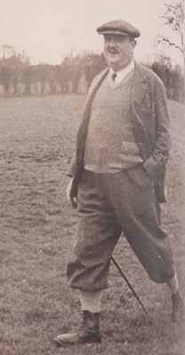
J'imagine l'effroi et le dépit de notre grand-père René de voir survenir la 2nde guerre mondiale avec occupation du haras par les « boches », réquisition des chevaux, la cave à vin pillée, installation de notre famille dans la petite maison de l'entrée dite « l'atelier » et autres communs, et j'oublie d'autres brimades et privations... Il en gardera à jamais la haine de l'envahisseur teuton.. Le bois de la vierge fut maintes fois bombardé (par les alliés je crois car les allemands avaient bâti en contrebas des abris à missiles V2 et rampe de lancement avec une route en béton : Il fallait donc mettre ces installations hors d'état de marche). La statue de la vierge fut bombardée également.
René épouse Magdeleine POLLET en 1920 ; de cette union naitront 5 enfants : DENISE, AGNES, RENE, MAGDELON et MICHEL le petit dernier né en 1929 ; Sans oublier les cousins MASUREL, JEAN, ROBERT et DENIS qui, orphelins, faisaient partie de la grande famille.
Tous séjourneront très régulièrement au HARAS et à l'HOTELLERIE, et une fois mariés eux-mêmes, les petits-enfants GLORIEUX, VANOUTRYVE, CAVROIS et WATTINNE profiteront des lieux avec de formidables souvenirs de cousinades, de pêche, de jeux de piste et parties de cache-cache ; nous pouvions emprunter les SOLEX, arpenter la cour du haras sur des échasses en bois, ennuyer les palefreniers (LEOPOLD, JACQUOT DUPLOUY, ALAIN BLOUIN, EUGENE POCLET, ROLLAND POCLET, MAURICE CHARTREL...) et le stud-groom Monsieur JOSEPH ALLENO (son épouse fabriquait le beurre dans un boxe sous leur habitation, des odeurs, des engins...) de la magie pour la petite fille que j'étais. Pour glaner d'autres souvenirs, il est possible de contacter REGINE, sa fille ou HERVE, son fils (qui habite HESDIN).
La graineterie et la vie au haras
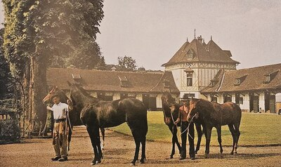
Le premier, c'est Maurice CHARTREL ; au dessus de la fenêtre du premier étage de la graineterie on remarque un sinistre souvenir de la présence des allemands : une croix gammée ! On peut se demander pourquoi elle n'a été effacée que très tardivement.
La graineterie était pour nous source de sensations fortes : plonger nos mains dans l'avoine ou sentir la bonne odeur du mash tout chaud ou l'odeur des cuirs à la sellerie. Les graines arrivaient du grenier par un ancestral conduit dans la cuve et l'on arrêtait le débit par un gros volant en fonte (bref, la machine sensationnelle). Une fois atteint l'âge requis, nous pouvions passer une partie de la nuit de garde à la sellerie avec l'un des palefreniers pour assister aux poulinages, quel privilège. Il fallait s'éloigner pour laisser travailler le vétérinaire Monsieur THERY si une mise bas s'avérait compliquée.
Bien amusantes les séances de pesée à la balance ; on ouvrait le vantail arrière et on découvrait le magnifique mécanisme ; alors on déterminait le poids de l'ensemble des enfants placés sur la semelle en bois. La balance était le centre névralgique dans la cour du haras, avec son petit banc accueillant.
Nous aimions traîner à la ferme DU RAMECOURT pour visiter vaches, cuves, cuvées... et pour rapporter le lait.
Souvenirs et anecdotes
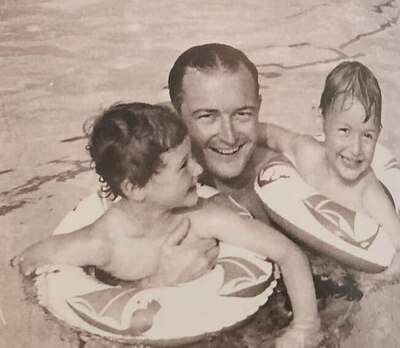
Quelle joie les départs avec notre grand-père à HESDIN en DS pour aller y déguster une frite à la baraque de la grand-place, passer prendre le PARIS-TU à la librairie PATOUX, petit cours d'histoire pour nous présenter la statue de l'ABBE PREVOST 1697-1763, natif d'HESDIN, une de ses œuvres majeures étant l'MANON LESCAUT » (le récit très romanesque des amours tumultueuses du Chevalier des GRIEUX et de la belle MANON) ; retour par la forêt d'Hesdin d'où loup pouvait surgir à tout instant... Régulièrement arrêt à la charcuterie GERVOIS pour acheter son fameux saucisson à l'ail et pieds de porc en gelée, notre grand-père adorait. Et nous... on adorait notre grand-père !
Nous aimions rendre visite à LUCIE qui habitait la toute petite ferme dans le jardin de l'hôtellerie ; elle y élevait volaille et lapins.
Aussi curieux que cela puisse paraître avec autant de chevaux dans le haras : jeunes cavaliers n'avaient pas de chevaux à monter (trop précieux, non débourrés...). Il fut décidé deux années de suite pour agrémenter nos vacances d'été de demander des chevaux à prêter à notre club hippique de HEM ; Quels joie de passer nos journées au manège, les plus « chevronnés » organisant les reprises pour les plus jeunes : les cours d'équitation remportèrent un vif succès sur TANT-PIS, PICNIC, ARLEQUIN et APOLLON. Anita MASUREL, Jean-François Charlotte, Brigitte ; ceux que je n'ai pas cités m'excuseront sûrement.
Les petits-enfants disposaient de « la salle aux oiseaux » pour jouer aux cartes, aux petits-chevaux... puis au bridge avec Magdelon ; pas sérieux s'abstenir car notre tante Magdelon rappelait régulièrement à l'ordre ses jeunes partenaires avec sa fameuse remarque « bridge = silence ! », pour cette raison je ne me suis jamais mise au bridge. Occasionnellement nos grands-parents nous invitaient au bureau/petit salon pour l'apéro avec un tout petit verre de DUBONNET, mais il fallait rester tranquille, chahut non toléré. De très belles années que ces années là, bonheur et insouciance. Notre grand-père possédait 2 joujoux extra qui ne faisaient pas crack boum hue mais qui nous faisaient mourir de rire : la poule pondeuse et le père la colique : la poule pondait des petits œufs de pâques lorsqu'on appuyait sur son dos et le père la colique assis sur son trône sortait un extraordinaire chapelet de son fondement tout nu ! Mais c'est encore le grand-père qui riait le plus de nous voir rire, toujours ébahis par la scène.
Notre grand-mère jouait à merveille son rôle et ne manquait pas de nous distribuer les bonbons conservés dans le bocal en verre dans le buffet de la salle à manger ; nous étions très gâtés en bonbons du fait que le beau-frère de mes grands-parents : MAURIC, PROUVOST, époux de la tante MIMI dirigeait à TOURCOING la maison FAUSTA Confiserie. Et fournissait régulièrement les grands-parents en choucas, carré fruits, également ses talents d'infirmière en nous frictionnant de SYNTHOL sur les douloureuses contusions.
Elle aimait nous réciter dans l'ordre et à toute vitesse la liste des ses 10 frères et sœurs POLLET (CHARLES, VICTORINE, GERMAINE, MARTHE, HENRI, SIMONE, JOSEPH, MAGDELEINE, MARIE-ANTOINETTE dite MIMI, SUZANNE, MARCELLE) : Seuls les fils dirigeront LA REDOUTE, ce qui faisait dire à mon père « Ah, si ma mère en avait eu deux… ».
NDLR : heureusement que ce récit est uniquement destiné à usage familial.
Il ne faut pas oublier de mentionner l'objet mythique de l'hôtellerie : la balançoire verte à bascule qui a servi à toutes les générations de cousins ; Jean-François l'a sauvée de l'oubli en la rapatriant à la ferme des prés à HEM.
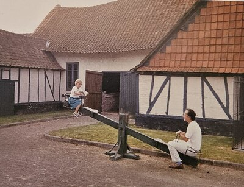
Et le canoë ? qui n'a pas chaviré en canoë sur la Ternoise ? Toutes les générations sont essayées à la navigation au long cours avec plus ou moins de succès : M___ tenta d'atteindre la baie de CANCHE avec jean MASUREL aidé par une voile dans un drap par sa sœur MAGDELON mais chavira
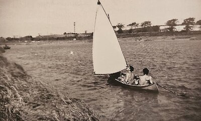
JEAN-FRANCOIS tenta la même aventure mais échoua également ; Notre Valère NICOLAS réussit l'entreprise et récidiva ensuite sa navigation sur l'AUTHIE Jussieu-BERCK. Chapeau pour ce bel exploit.
La cour du haras et la propriété furent pour nous un extraordinaire terrain de jeux : pas de tablette ni de console, pas de téléphone iPhone ni Facebook, pas de télévision, Ipad, DVD... j'arrête l'énumération au risque de paraître rétrograde ; nos goûters à 4 heures se composaient de pain avec une barrette de chocolat MEUNIER ou DELESPAUL-HAVEZ ou confiture et à boire soit du sirop de grenadine, soit du sirop de menthe. Les sodas n'existaient pas. Il n'y a pas eu d'enfants obèses dans la famille.
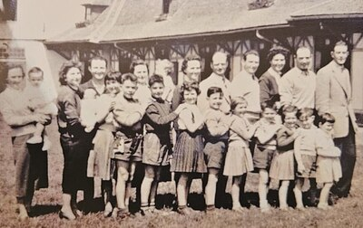
Certains membres de la famille montaient à cheval : mon grand-père René, cavalier émérite, il a fait la guerre 14 à cheval... Roger GLORIEUX, Magdelon CAVROIX, passionnée de chevaux et d'élevage, mémoire de famille concernant les pedigrees, incollable sur les origines, la reine du shibook, Michel...
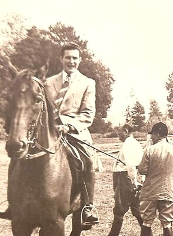
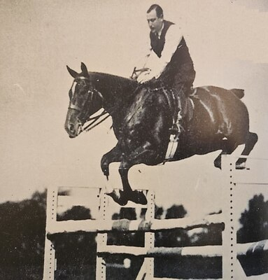
A cette époque, le haras était entretenu au cordeau, la roseraie néanmoins a été remplacée par un joli parterre de fleurs, le potager entretenu par ALAIN BLOUIN, le parc de fleurs, quel bonheur pour notre grand-mère d'aller cueillir chaque jour des roses, gueules de loup, dahlias, pois de senteur ... Et pour nous, chouette les intrusions au potager pour chipoter fraises et carottes, groseilles, framboises...
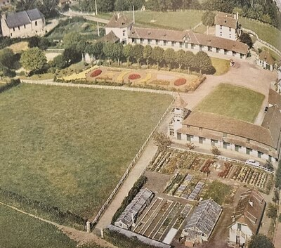
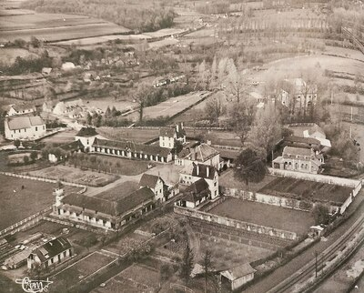
Les années 1960 et 1970
Dans les années 1960, René et Michel cohabitaient avec leurs enfants à l'hôtellerie, et ce jusqu'à la fin des années 70. Je me souviens bien des soirées de pêche « miraculeuses » à la truite, France adorait la pêche à la mouche et réussissait plus qu'honorablement. On pêchait à Blingel et aussi à AUCHY ; il était fréquent de retrouver sur les rives de la ternoise l'oncle Théo WIBAUX et l'oncle Georgey WATTINNE, dingues de pêche à la mouche également ;
France et son cousin Théo WIBAUX
Et la SIMCA 1500 BREAK avec table de pics intégrée
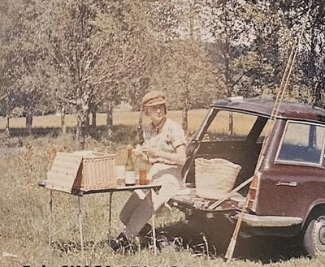
Le point de ralliement était une petite cabane surnommée « la cabane des maraudeurs », idéalement située sur le sol de la rivière et parfaitement conçue pour les picnics tirés du coffre de la voiture ; la marée a été tout un temps une SIMCA 1500 brée dont la particularité était que le sol du coffre se déployait en une confortable table de picnic. Bruno et Robert MASUREL pêchaient l'anguille, de nuit, ça m'intrigue beaucoup.
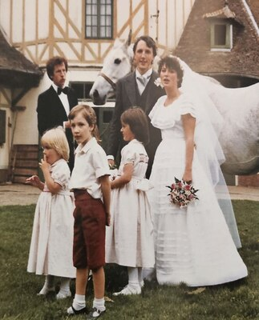
Romain ce jour-là décide à notre insu de suivre les chasseurs... Et lorsque je me demande : où est passé Romain ? il était nulle part et pas avec son père ; Panique totale ; nous prenons le chemin longeant la Ternoise et près de l'allée aux merles, stupéfaction de voir le petit vélo rouge de Romain abandonné au bord de l'eau, à l'endroit où un tronc d'arbre était couché sur la rivière, et donc très faisable de traverser la rivière sur ce tronc...
Nous sommes même allés jusqu'à la chute de Rollancourt pour voir si le corps s'y trouvait.
Lorsque nous rentrons à l'hôtellerie pour appeler des secours, nous trouvons notre petit Romain très ZEN, suçant son pouce devant la télé et nous donnant une explication des plus simples dans son langage à lui : z'é suivi les chasseurs, mais fatigué alors moi suis rentré !!! J'ai encore des frissons rien qu'à écrire ces quelques lignes ! Je ne sais plus si j'ai distribué à la fois fessée et énormes baisers, probablement les deux.
Sacré ROMAIN, il a fait les 400 coups à Blingel, contrariant souvent son grand-père qui se trouvait un peu débordé par la situation. Romain se souvient bien avoir subi les foudres de Michel, pour avoir éparpillé dans la grange de l'hôtellerie, dans la cour, bref partout... la majorité des outils.
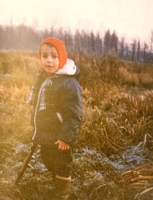
Fréderic doit se souvenir également avoir arrêté un début de feu à l'entrée du petit bois juste après le fumier ; Monsieur Romain âgé de 7-8 ans avait fort bien réussi à enflammer un énorme tas de branchages qui prenait de l'ampleur.
Chantal doit bien se souvenir de cet été où, les enfants gardiennés par une jeune baby-sitter fort inexpérimentée, reçut un coup de téléphone de Mauricette catastrophée, expliquant que les enfants avaient transformé l'étage de l'hôtellerie en un camp indien !! Fortement influencés par les petits cousins SAINT-LEGER fraîchement débarqués des Antilles en véritables sauvageons. J'en pris pour mon grade pour défaut de « gardiennage » mais j'étais alors fort occupée par les débuts de notre restaurant « LA QUEUE DE VACHE ».
Puis les enfants OBRY grandirent en sagesse et tout rentra dans l'ordre.
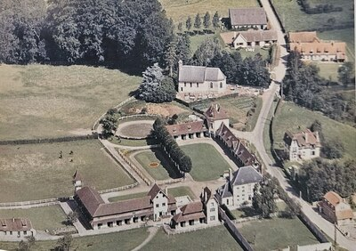